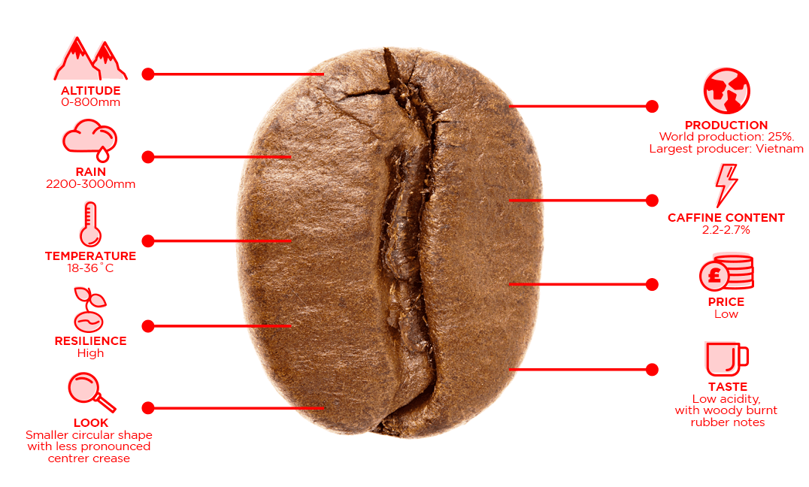
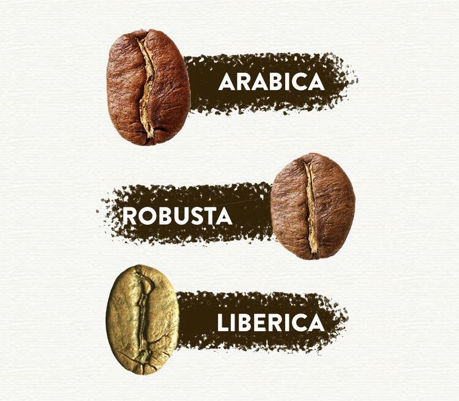
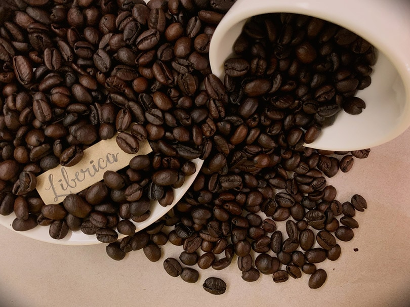
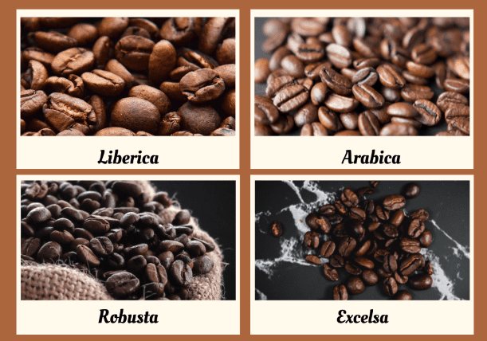
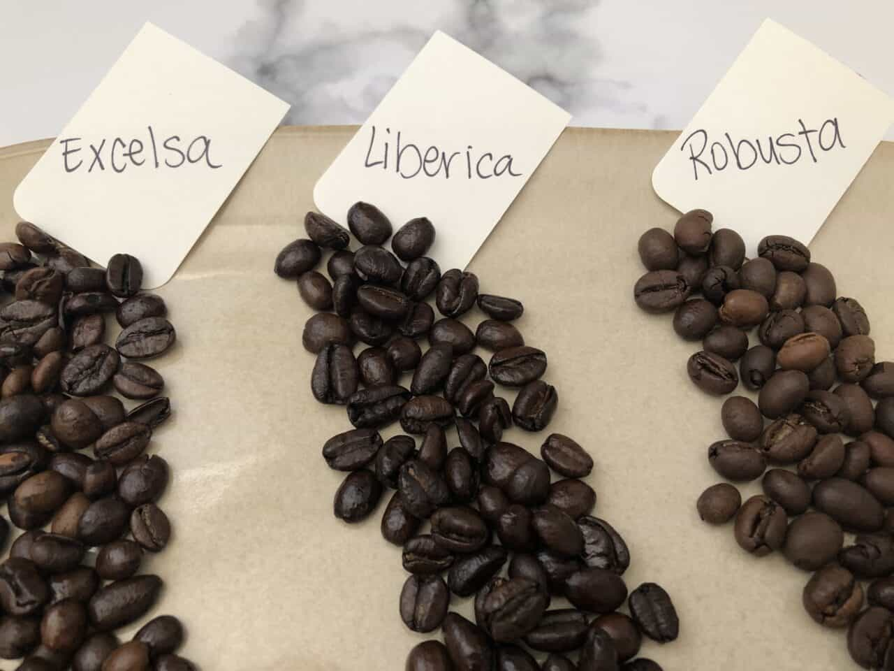
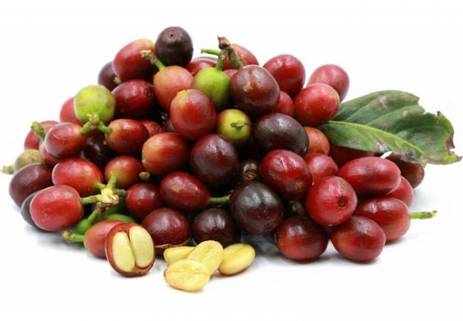
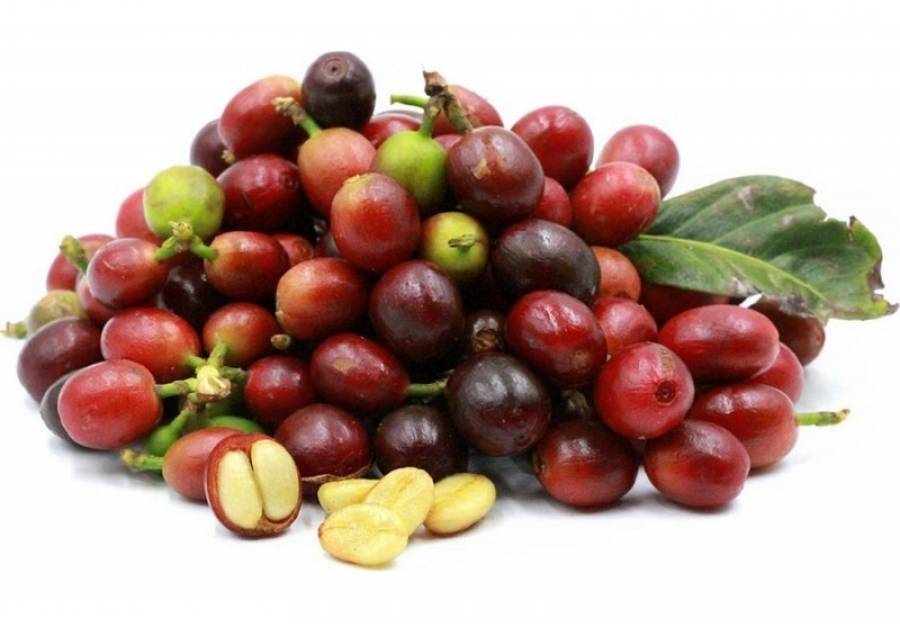

The name Arabica likely comes from the beans' popularity in 7-th centure Arabia(present-day Yemen).
Arabica coffee has a mild and sweet taste with tones of sugar, fruit and berries. Well-known Italian coffee grower Ernesto Illy wrote in the issue of Scientific American:
"Arabica is a medium-to low-wielding, rather delicate tree from five to six meters tall that requires a temperate climate and considerable growing care. Commercially grown coffee bushes are pruned to a height of 1.5 to 2 meters. Coffee made from arabica beans has an intense, intricate aroma that can be reminiscent of flowers, fruit, honey, chocolate, caramel or toasted bread. Its caffeine content never exceeds 1.5 percent by weight. Because of its superior quality and taste, arabica sells for a higher price than its hardy, rougher cousin"


;
2. Robusta Coffee Beans
Coffea caniphora
The second of most popular coffee bean is Robusta.
Robusta has often been held to be of a "lower" quality then Arabica coffee. It is considerably easier to grow and is often more tolerant of disease and drought. It also has more caffeine than Arabica by nearly twice as much.
This bean originated in the 1800th in sub-Sarahan Africa and is now grown primarily in Africa and Indonesia.
Robusta coffee is more bitter and acrid then Arabica. It often has a strong smell and a burnt taste.
"Robusta is cheap and poorly prepared because it is expected to be cheap and poorly prepared. Large specialty coffee companies simply cannot afford to take a risk on offering even the best Robustas. They would be doomed to by the same 100% Arabica myth they helped create."
;

3. Liberica Coffee Beans
Coffea liberica
The first plantation of liberica coffee was established in Liberia in 1864, but reports of its go back to 1792. Liberica began to gain popularity when Southist Asian coffee producers adter a fungal disease("coffee rust") wiped out most Arabica plantations.
Liberica coffee has a metallic, woody and a little bitter taste. Some coffee drinkers adore the unusial, nutty flavor. Others compare the flavor to burnt garbage.
Liberica has a strong and unique flavor. Some people saying that you either “love or hate it, with no in between”. Those who love the taste of Liberica coffee appreciate the smokey and chocolatey taste of the coffee, particularly because the taste is accompanied by floral and spicy undertones. However, there are also those who are not fans of Liberica because they feel that the flavors are too dense and overpowering. In the Philippines, this strong and bold flavor is the reason why Liberica coffee is colloquially known as “barako”, which means “manly”.
;

4. Excelsa Coffee Beans
Coffea excelsa
The fourth type of coffee bean is called Excelsa. It was a separate coffee kind, but ricently scientists reclassified it as a Liberica variant.
Excelsa beans grow almost entirely in Southeast Asia, and they're shaped like Liberica beans — elongated ovals.
Excelsa beans are pretty unique. It has tart notes and fruity flavors. Excelsa are also lighter on aroma and caffeine.
It is remarkably difficult to explain the taste of Excelsa coffee. The taste of it is so overpowering that it is often mixed with other coffee types. Even if you are a lover of coffee, you may not necessarily enjoy the taste of Excelsa coffee. It tastes like coffee, but it is unlike any other coffee that you will have tasted. Excelsa coffee smells incredibly strong. It seems as if there are a lot of people that are put off by the aroma of the coffee. You can try it out. You may like it. Excelsa coffee just tastes way too different from what you are used to. It may be worth your time to mix it up with some Arabica beans. It will help to round out the taste. You will still get the earthy taste of the Excelsa coffee, but the aroma and the taste won't be quite so overwhelming.
;

 ;
;

 ;

;
